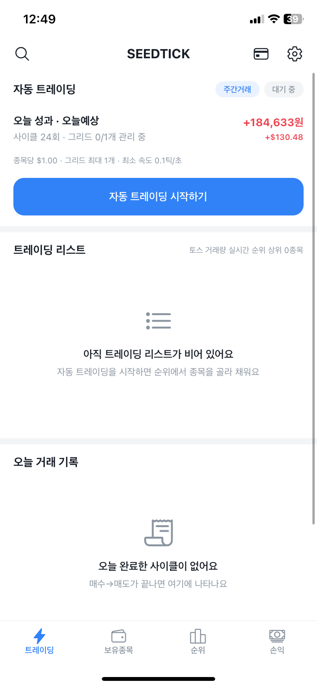
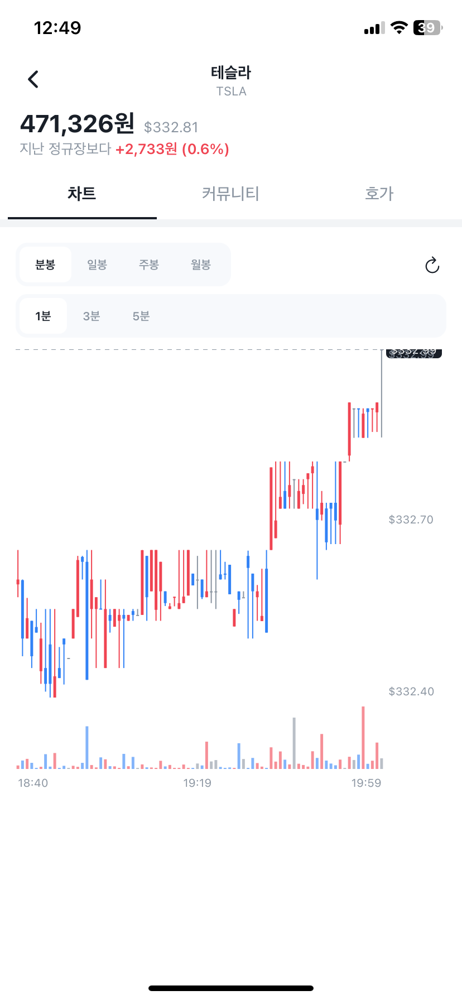
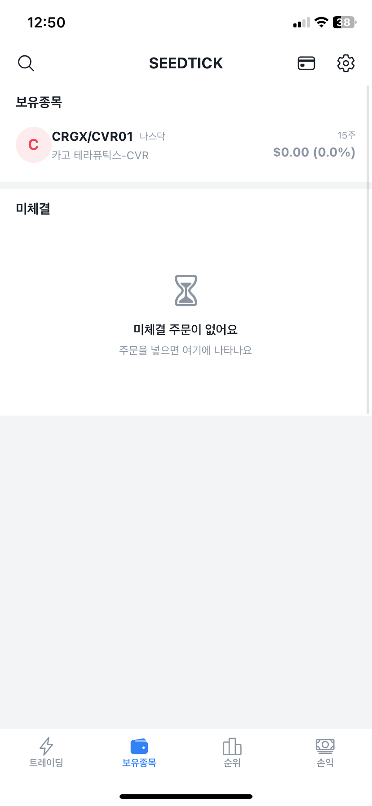
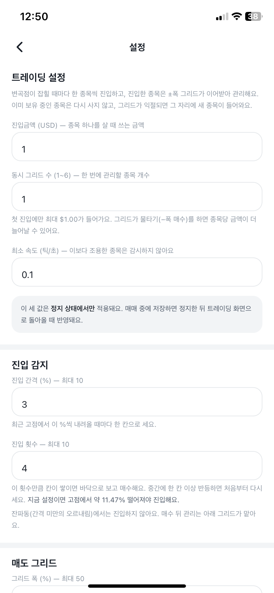
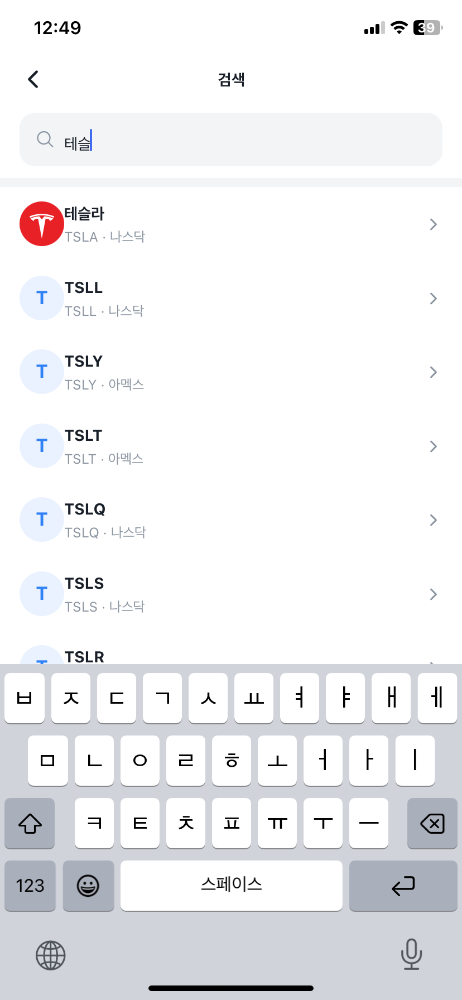
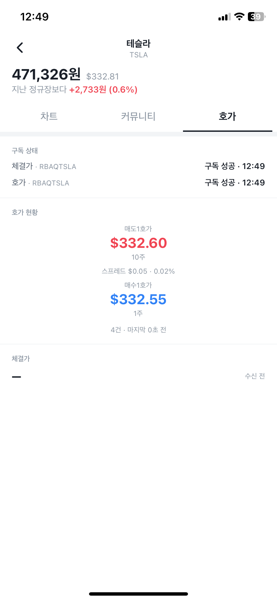
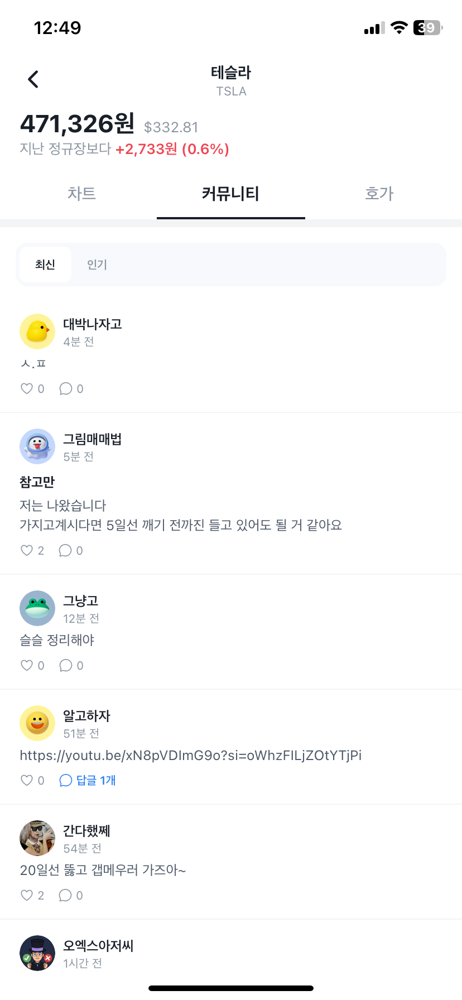

변곡점 감지
Savitzky–Golay 필터의 1·2차 미분으로 기울기 부호가 뒤집히는 지점을 찾아요. 잔파동에는 반응하지 않아요.
해외주식 자동 트레이딩
한국투자증권 오픈API의 실시간 체결가를 받아 가격이 방향을 바꾸는 순간을 잡아내요. 종목을 고르고, 사고, 관리하고, 파는 한 사이클을 SEEDTICK이 대신 돌려요.
내 계좌 · 내 기기에서 실행돼요. 승인된 계좌만 사용할 수 있어요.


핵심 기능
순간을 잡는 일은 사람보다 기계가 잘해요. SEEDTICK은 그 부분만 대신해요.
Savitzky–Golay 필터의 1·2차 미분으로 기울기 부호가 뒤집히는 지점을 찾아요. 잔파동에는 반응하지 않아요.
거래량·거래증가율·회전율·상승률 순위를 주기적으로 받아 트레이딩 리스트를 스스로 채워요. 조용한 종목은 감시하지 않아요.
진입한 종목은 ±폭 그리드가 이어받아요. 익절되면 그 자리에 다음 종목이 들어와 사이클이 계속돼요.
수익이 나면 다음 진입금액을 줄이고, 손실이 나면 늘려요. 목표에 닿으면 세션을 끝내고 처음 금액부터 다시 시작해요.
보유종목, 미체결 주문, 오늘 완료한 사이클과 손익을 탭 하나로 확인해요. 원화·달러를 함께 보여줘요.
분·일·주·월봉 차트와 실시간 호가, 종목 토론까지 앱 안에서 바로 봐요.
화면
옆으로 넘겨서 둘러보세요.





시작하는 법
한국투자증권에서 받은 AppKey·AppSecret과 계좌번호를 넣고 토큰을 발급해요. 키는 기기 보안 저장소에 암호화해서 보관하고, 서버로 보내지 않아요.
진입금액, 동시 그리드 수, 최소 속도, 진입 간격과 횟수, 매도 그리드 폭. 값을 바꾸면 화면이 "지금 설정이면 고점에서 몇 % 떨어져야 진입해요"까지 계산해서 알려줘요.
감시 → 매수 → 그리드 관리 → 매도까지 알아서 돌아요. 멈추고 싶으면 언제든 정지할 수 있고, 보유 중이면 정리한 뒤 끝나요.
설치
QR을 스캔하면 설치 페이지가 열려요. 페이지에서 Install을 누르면 기기에 바로 설치돼요.
설치 페이지 열기설치 후 처음 실행하면 승인된 계좌인지 확인해요.
알아두세요